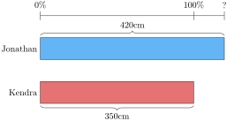
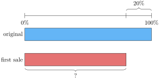
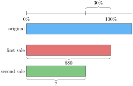

Definition 8.2.1. Percentage.
A percentage is a fraction with the denominator of 100. That is \(x\) % is the fraction \(\dfrac{x}{100}\text{.}\)
| Phrase | Whole Unit (100%) |
|---|---|
| Johanna scored 5% more than Charlie on the exam. | Charlie’s score on the exam. |
| Fred’s income will rise 3%next year. | Fred’s current income. |
| Becky’s bake sales sold 10%fewer cookies than Faye’s | Number of cookies Faye’s bake sale sold. |
| With a coupon, the price of the shirt will be reduce an additional 25%off the sales price. | the sales price of the shirt |

![A stacked bar diagram with two bars and a percent scale. The top bar is labelled "filled" and has length 320. The bottom bar is labelled "empty". Together the two bars have a brace on the right and labelled 400. The percent scale is above the two bars. The left is labelled 0% and the right (which is even with the "filled" bar) is labelled 100%. There is a mark on the percent scale even with the length of the "empty" bar. The distance on the percent scale with this mark and the 100% mark is labelled "?%".](generated/latex-image/sect-percents-3-6-7-2-3.svg)
![A stacked bar diagram with two bars and a percent scale. The top bar is labelled "current" and has length "$500". The bottom bar is labelled "After" and the length is labelled ?. The percent scale is above the two bars. The left is labelled 0% and the right (which is even with the "after" bar) is labelled 300%. There is a mark on the percent scale even with the length of the "current" bar and is labelled 100%. The distance on the percent scale between the 100% mark and the 300% mark is labelled 200%.](generated/latex-image/sect-percents-4-5-2-2.svg)
![A stacked bar diagram with two bars and a percent scale. The top bar is labelled "discounted price" and is labelled ?. The bottom bar is labelled "full price". The difference between the two bar lengths is labelled $15. The percent scale is above the two bars. The left is labelled 0% and the right (which is even with the "full price" bar) is labelled 100%. There is a mark on the percent scale even with the length of the "discounted price" bar. The distance on the percent scale with this mark and the 100% mark is labelled "25%".](generated/latex-image/sect-percents-4-6-2-2.svg)
![A stacked bar diagram with two bars and a percent scale. The top bar is labelled "Alfred" and has a label of ? The bottom bar is labelled "Xavier". Together the two bars have a brace on the right and labelled \$420. The percent scale is above the two bars. The left is labelled 0% and the right (which is even with the "Alfred" bar) is labelled 100%. There is a mark on the percent scale even with the length of the "Xavier" bar. The distance on the percent scale with this mark and the 100% mark is labelled "10%".](generated/latex-image/sect-percents-4-7-2-2.svg)

